Malice, kosila in specialitete z žara na mizi pod trto in kivijem — na terasi, kjer je vsak gost dobrodošel kot v domači hiši.
Gostišče Kužner pri Makedonki že vrsto let pripravlja makedonske in domače jedi za goste iz Maribora in okolice. Naša kuhinja diši po žaru, počasi kuhanih omakah in receptih, ki se v družini prenašajo iz roda v rod.
Pri nas boste našli malice med tednom, kosila ob vikendih ter posebne specialitete z žara. Naš vrt pod staro trto in kivijem je priljubljeno mesto za zaključene družbe, rojstne dneve in praznovanja — podnevi v senci listja, zvečer pri sveči.
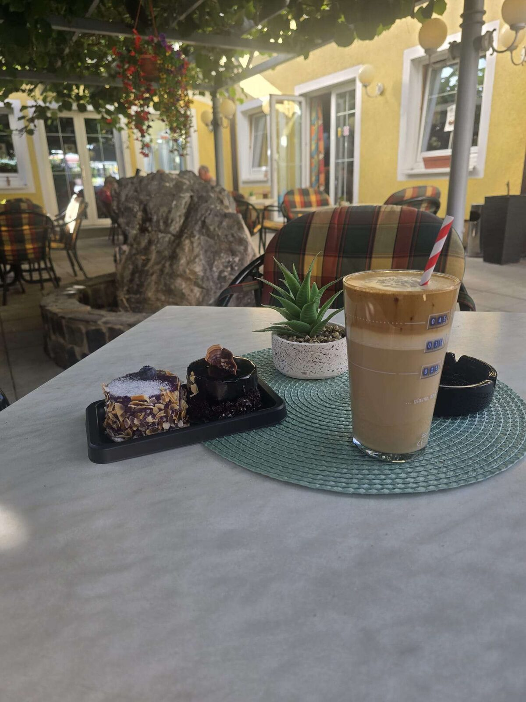
Od hitre delovne malice do praznovanja v veliki družbi — pri nas je miza vedno pogrnjena.
Domače dnevne malice med tednom, hitro in po dostopni ceni.
Kosila, specialitete z žara, pijača in sladice — poglej celoten jedilnik.
Poglej meni →Kamnita fontana, senca kivijeve trte in prižgane sveče zvečer — naš vrt je prostor za počasne večerje in dolge pogovore.
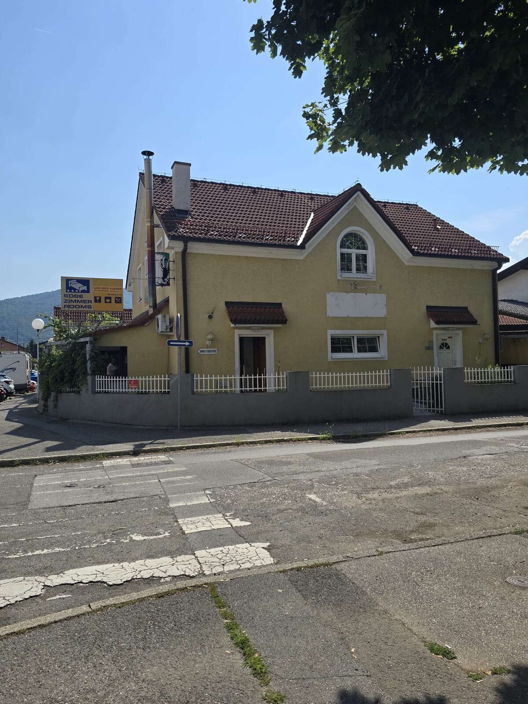
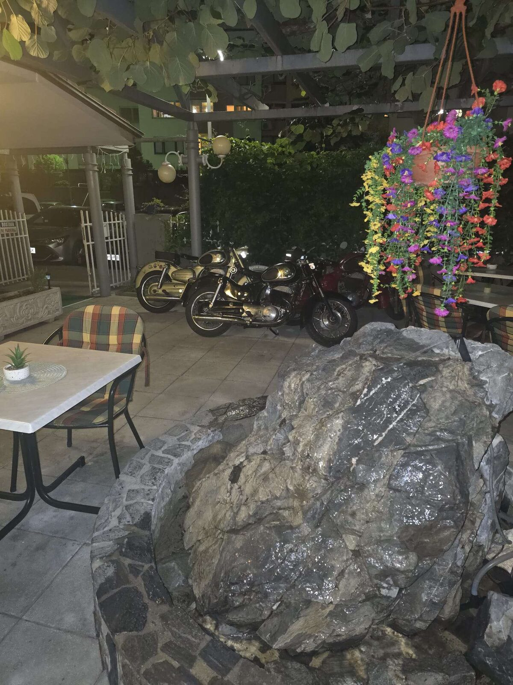
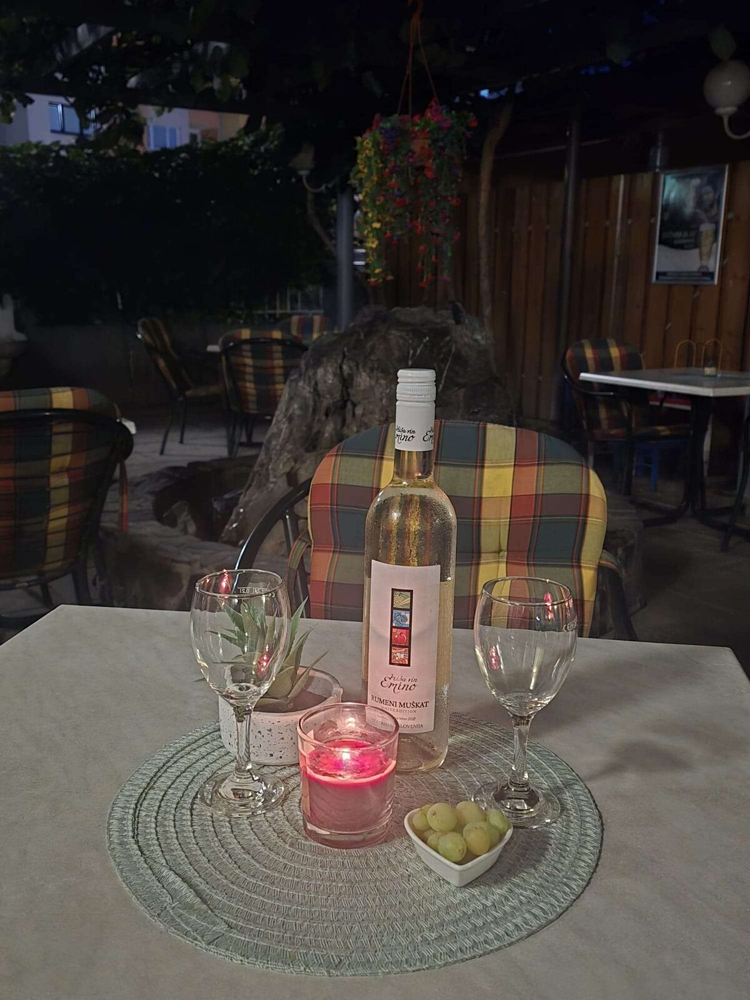
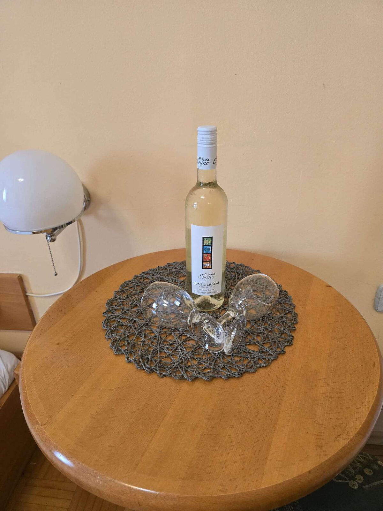
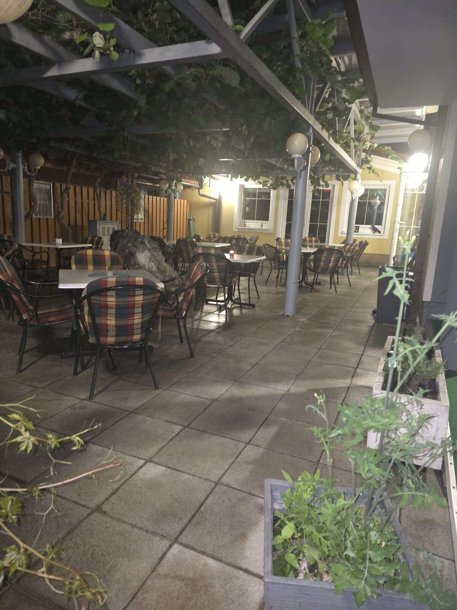
Rojstni dnevi, obletnice in druga praznovanja na naši pokriti terasi — poskrbimo za postrežbo, sladice, sadne krožnike in mizo, pripravljeno posebej za vašo družbo.
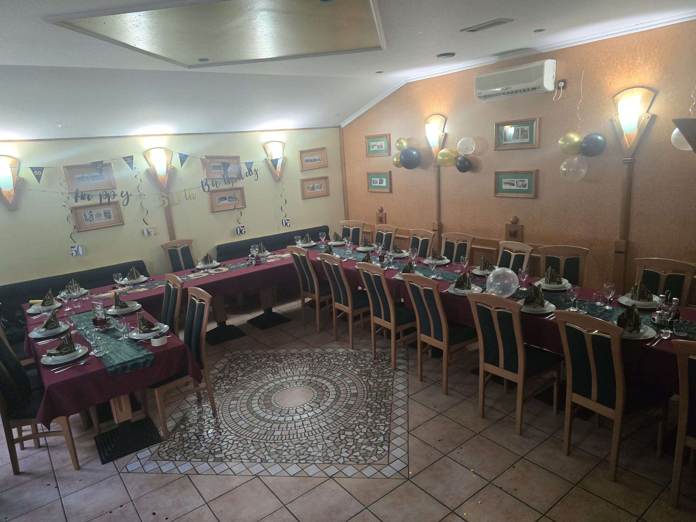
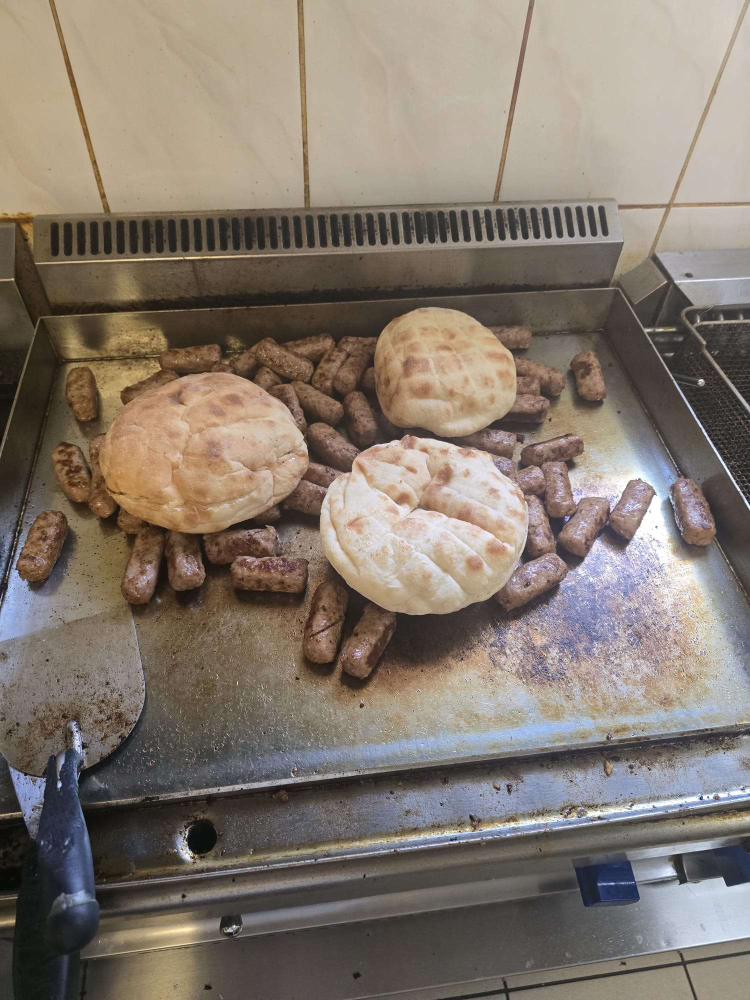
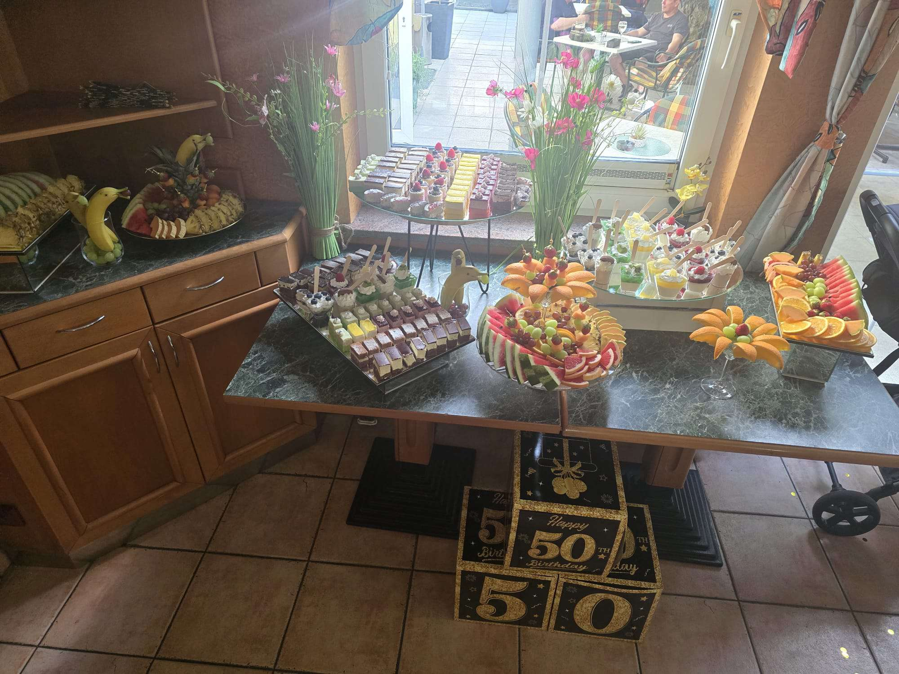
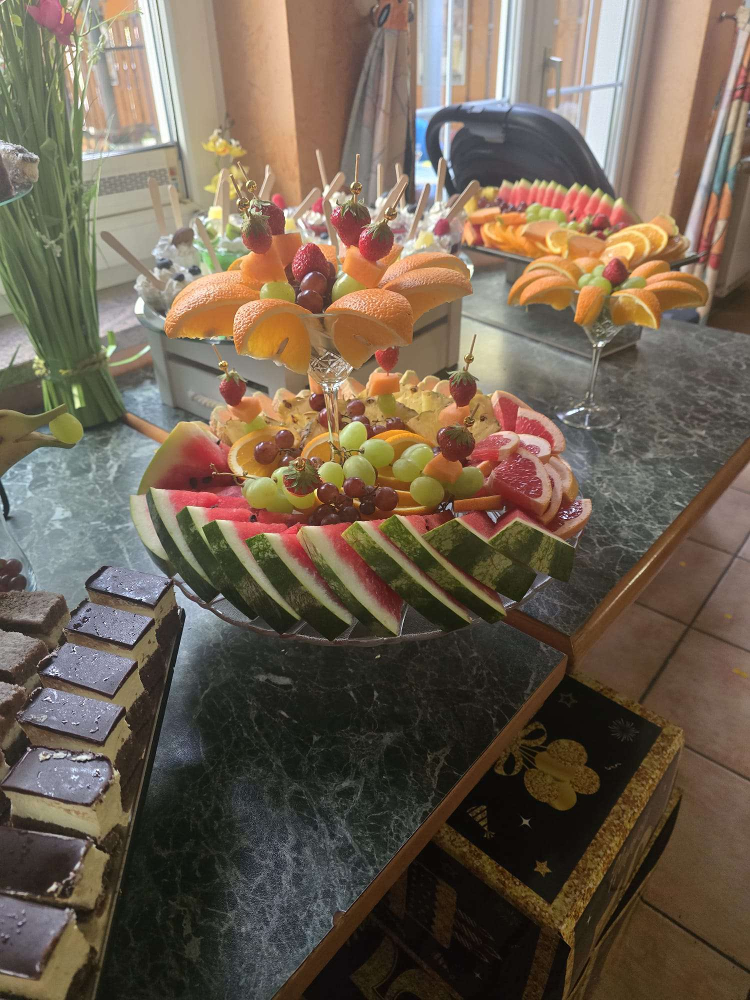
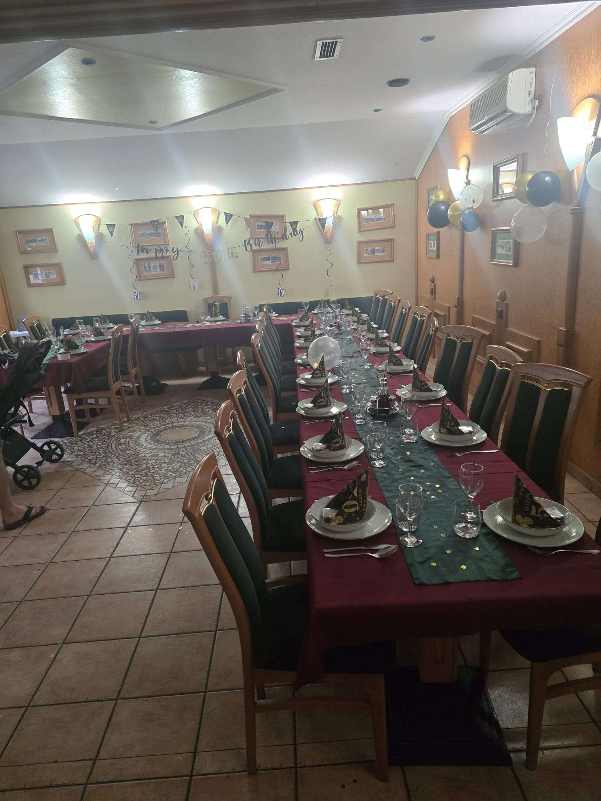
Poleg dobre hrane ponujamo tudi urejene sobe z lastno kopalnico in prho, do katerih vodi ločen vhod. Brezplačen Wi-Fi je na voljo v vseh sobah.
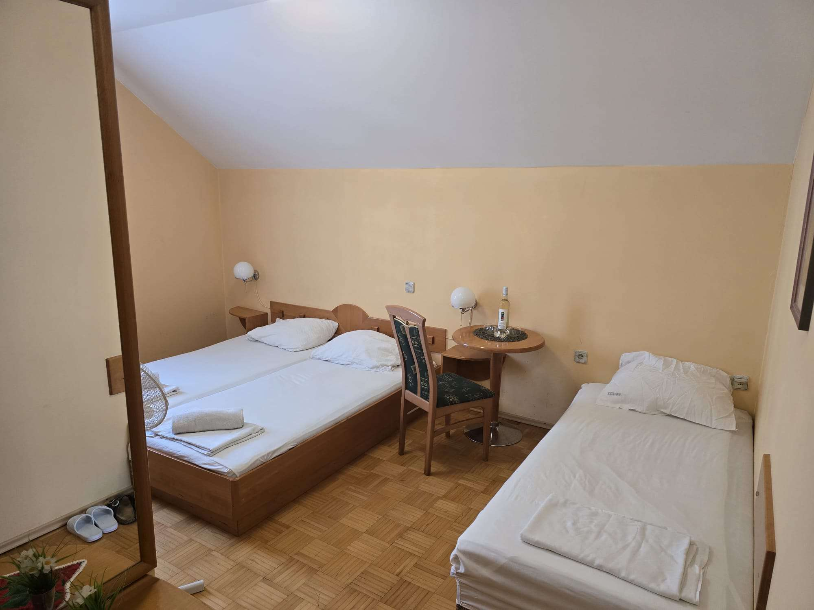
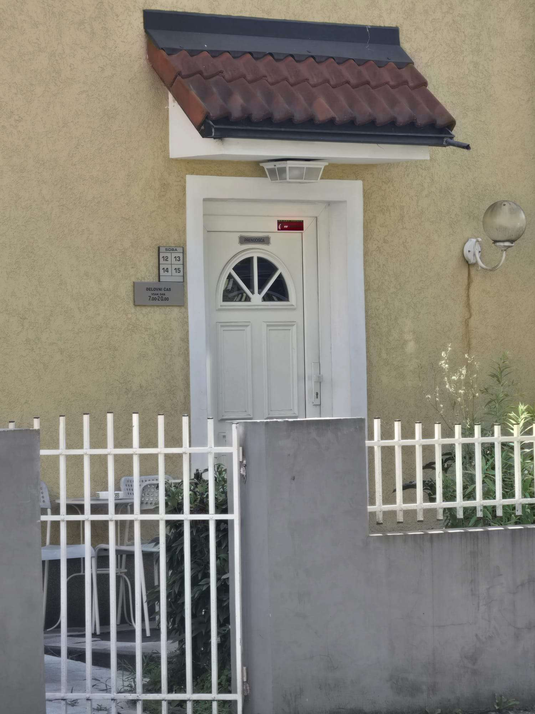
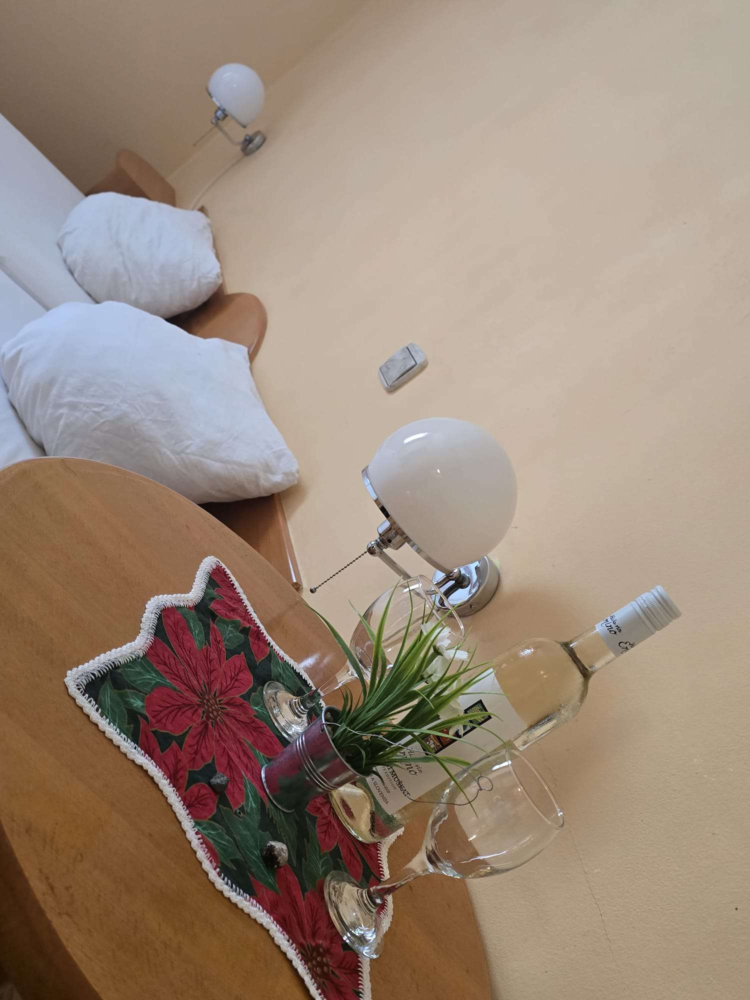
Slike prikazujejo eno od sob. Za razpoložljivost, tip sobe in ceno nas pokličite na 069 909 019.
Pokaži več o sobahOz. za proslave delovni čas po dogovoru